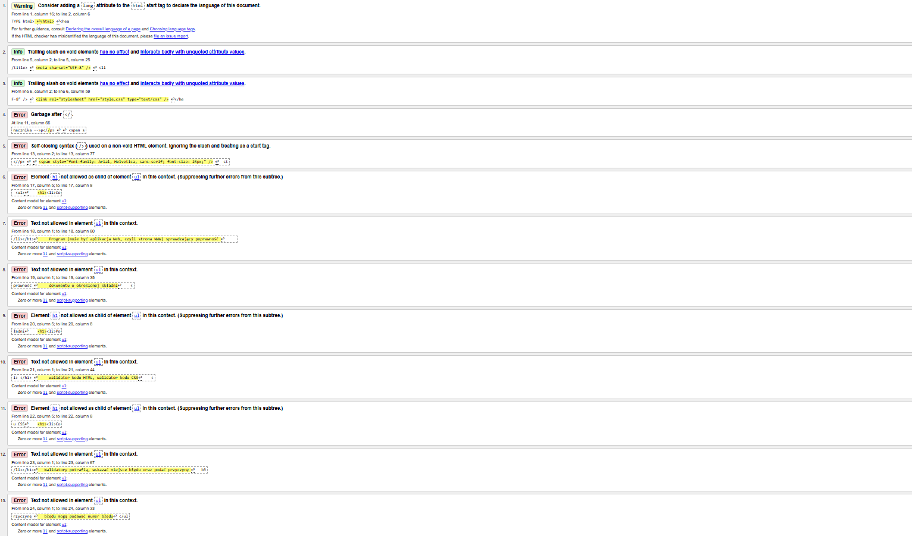
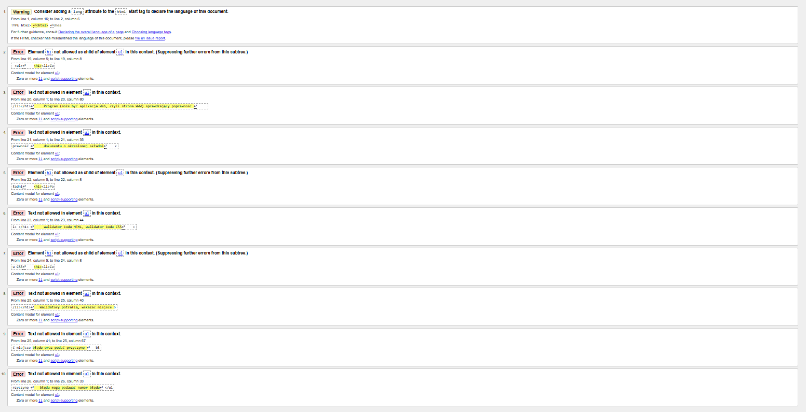

styl wpisany wielkosc 40 pikseli
styl wpisany wieloscia standardowa z uzyciem znacznika -->p
styl wpisany wielkosc 25 pikseli
styl wpisany wieloscia standardowa-->span


- Co to jest walidacja.
Program (może być aplikacja Web, czyli strona WWW) sprawdzający poprawność
dokumentu o określonej składni
- Podaj rodzaje walidacji
walidator kodu HTML, walidator kodu CSS
- Co umie wskazać walidator (dwie informacje)
Walidatory potrafią, wskazać miejsce błędu oraz podać przyczynę
błędu mogą podawać numer błędu